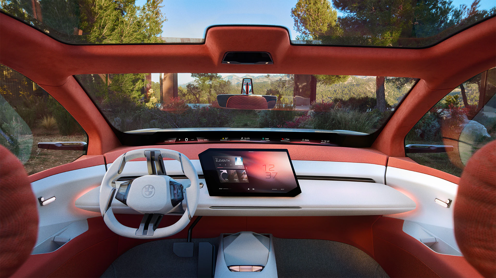
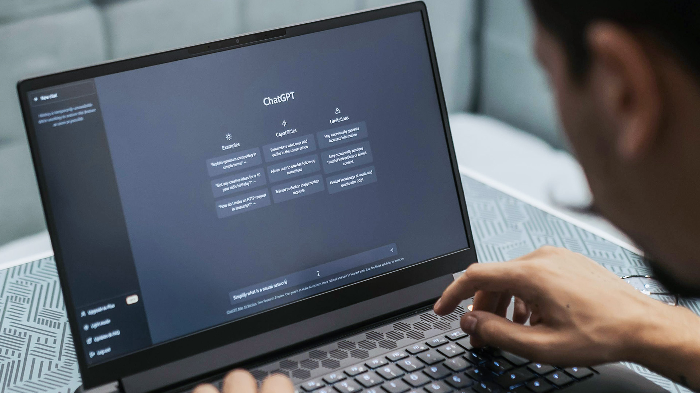
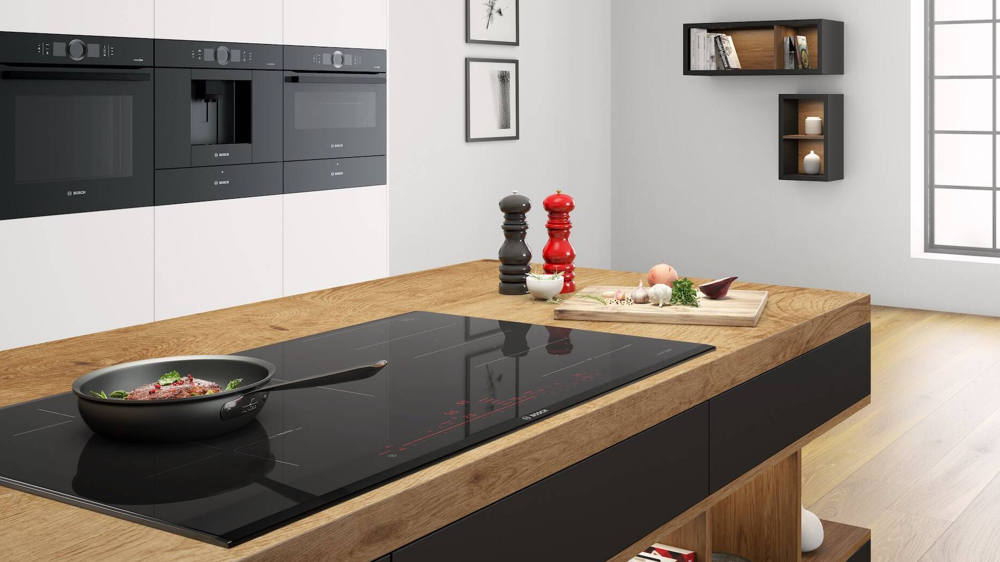

Hi, my name is Simon!
I study Human-Computer-Interaction at the
LMU Munich.
I focus on UX/UI, usability-, concept-, and product engineering, physical- and digital prototyping, as well as programming, web development- and design.
I would describe myself as a creative, curious, analytical, and detail-oriented developer and designer committed to
realizing the holistic development process, from ideation, concept creation, prototyping, user studies, to both frontend
and backend implementation, as well as testing and deployment. I combine the creative knowledge of a designer with the critical thinking
of a developer, enabling me to collaborate more effectively and bring concepts to life. Scroll down to explore my cards that represent my work and topics I'm interested in.


I Like to Design and Create Webpages- And Applications.

I Started Freelancing in Video and Graphic Design When I Was 14.

Mobile Application Prototype Following a UCD Process.

Some Words About My Experience as a Tutor.

Client With “C” and Web Application With “JS”.

My Favourite Recreational Activity Is Creating and Playing Music.

Web Browser Extension: Themes for University Website.

Using Practical Research, Analysis, Ideation, and Prototyping.

Interaction Design and Physical Prototyping of a Balloon Game.

Iot: Connectivity Mode Control on Smart Home Devices.

6 Month Full-Time Internship
Softwaredevelopment Work-Study
Write Something here.
A Spotify Web-App for Autoscrolling Chords.

AI-Enabled Recycling Bin for Your Home.

Uncover Hidden Spotify Gems with Machine Learning.

AI-Generated Music That Adapts to Your Heart Rate While Running.


My website is completely self-written in HTML , CSS , and quite some JavaScript . It's influenced by the "Neo-Brutalism" design trend, embracing strong outlines, contrasting colors, and bold typography. With my design, I tried to create something unique and bold, opposing most modern web design trends. I started by hand-sketching some ideas on my tablet, continued by creating a high-fidelity prototype in Figma, and eventually refined and coded my webpage. I first got in touch with web development in my first semester at LMU Munich. There, I learned the basics of HTML, CSS, and JavaScript. I thoroughly enjoyed this field and designed and implemented some smaller projects early on (e.g.). Over time, I gained a lot of advanced skills in this area. Teaching and assisting the subject of web development one year later as a tutor further deepened my knowledge, allowing me to effortlessly design and code responsive websites like the one you are on right now. I now have advanced skills and a profound understanding of web development, from Frontend to Backend, including various frameworks and libraries like React, Node.js, Express.js, Bootstrap, Svelte, Flask, Django, and more. My personal website recently underwent a design update, which you can see here.

I initially started back in 2014 by creating short 3D introduction animations for YouTubers. I uploaded my final projects on my own YouTube channel, which I named "DiceFX." The channel quickly gained attention, built a community, and I began freelancing by selling my personalized designs as well as presets for creative software to other designers. In addition to motion design, I also focused on graphic design by creating logos, banners, thumbnails, and more, which I sold as well. Although I have now ceased creating 3D introductions due to a decline in demand from YouTubers, I continue to work in media design overall. For example, I have designed geographic filters for Snapchat, created a new logo for a small private pub, designed, printed, and sold posters for a kid's TV show, and personally redesigned company logos. In another project, I learned to work myself into Autodesk Maya and created a Low-Poly animation that you can see here. I am able to apply my editing skillset to create the video prototypes featured in my various projects. I am now happy to have advanced skills in creative software like Adobe Photoshop, After Effects, Premiere Pro, Figma, and Maxon's Cinema4D, along with a profound understanding of design concepts. Have a look at some of my designs from that time.

Meet is an app designed to connect people through various activities. It allows users to create their own events for others to join or participate in events created by other users. Organization is simplified with an integrated chat function for communicating with new friends. Six other students and I developed this idea for a mobile application and created a high-fidelity prototype following a user-centered design (UCD) process. In brief, we started by brainstorming and sketching out ideas, then created a design brief. We moved on to wireframing in Miro and began prototyping in Adobe XD. With my background in Adobe software and my interest in UX design, I contributed significantly to this project. I generated most of the ideas, guided the group as a leader, and also distributed tasks. We conducted a usability heuristic evaluation, worked through a system checklist, iteratively improved our prototype, and concluded with usability testing, after which we refined our prototype further. We finished our project with a short video presentation and a portfolio.


Back in school, I was always looking forward to presentations. I enjoyed standing in front of the class and speaking about a subject that interested me. My teacher once told me after a good presentation, "You have the skill. When thoroughly understanding a topic, you are able to teach it and enlighten others." He recommended that I pursue this skill in some way after school. In my third semester at LMU Munich, after feeling confident with my knowledge in a course that I'd successfully passed the year before, I decided to apply for an Assistant/Tutor position in Digital Media. The content of this course includes digitization, compression techniques with algorithms like Huffman coding or LZW, chroma subsampling, video compression, audio editing, number systems, and web development with HTML, CSS, and JavaScript. My tasks were presenting the course content in weekly tutorials as well as creating and grading assignments. I really enjoyed giving tutorials, standing next to a whiteboard in front of students, and conveying the subject's content. Helping a struggling student or seeing them all understand a complicated topic after I explained it to them, and coming up with ideas on how to approach and teach a difficult subject matter, were the things that made me enjoy being a tutor and continue working as one in my subsequent semesters.

Quarto is a board game with 16 stones, each having four attributes. The goal is to place the stone given by your opponent in a row where all
stones share at least one common attribute. Each turn, your opponent chooses the stone you must place.
As part of my System Programming course, three fellow students and I programmed a client for this game.
We used the C programming language and learned about system programming concepts such as pipes, sockets, protocols, client/server architecture, scheduling,
and processes/threads. I enjoyed programming in C because it is a low-level language that contrasts with most modern languages,
giving me a sense of "ownership" over the computer. For this project, I used Linux and even switched to it as my standard OS for six months.
The server for the Quarto game, set up by the university, lacked a proper GUI, and I couldn't find any suitable online version with a nice user interface.
Therefore, I decided to use my web development skills to create the game as a browser application. My implementation allows players to play Quarto
against the computer by dragging and dropping the stones onto the game board.
In addition to creating an intuitive and attractive UI, I focused on enhancing the game experience by making the player wait for the computer to take its turn.
The drag-and-drop interaction, instead of clicking, also contributes to a more realistic feel. Ensuring the visibility of system status was
important to me, so the user can always see what the computer is currently doing and understand what to do when it's their turn.
I also programmed a simple AI that can be activated, allowing the player to only ever "win" in the form of a tie.

When I was about 12 years old, I taught myself to play the electric guitar. I quickly made progress and continued to play daily.
Now, I am very experienced with plucked string instruments. Besides the electric guitar, I also play the western guitar, ukulele, and classical guitar,
which I probably enjoy the most. I also taught myself the piano when I was around 17. Learning the piano helped me visualize the guitar fretboard
and understand how chords and scales work on other instruments.
What drives me most in playing instruments is music theory. It is essentially the language of music, much like how math is the language of physics.
Music theory explains why music works, why certain chord progressions sound good, and which ones evoke feelings of sadness, happiness, confusion, or mystery.
It teaches how to build chords that sound unexpected and dissonant, and how to still resolve into a minor cadence.
Music is closely related to physics because a note is, in essence, an acoustic wave—a vibration that travels through a medium like air.
Chords are just interferences of multiple waves or notes. By superimposing certain notes onto a chord and playing multiple chords in a specific sequence,
one can evoke specific emotions. I find that very fascinating. This is what music and music theory mean to me and what drives me to continue playing instruments
and further educating myself in this field.

The main platform most students use at the University of Munich is Uni2Work.
During pride season, I noticed students discussing the fact that Uni2Work doesn't adopt a pride theme with the typical rainbow flag,
as other websites do during that time. Since Uni2Work's design is predominantly a monotonous green, I decided to program a general
browser extension for Chromium, allowing users to select different themes for this webpage, including a pride theme.
After some research on how browser extensions work, I finished programming "Uni2WorkThemes" and published the extension in the Chrome Web Store
for other students to use.
Short explanation: The popup's HTML is only displayed when the user is on the active tab *://*.uni2work.ifi.lmu.de/*.
Here, the user can select the different themes. On every other website, the extension's popup, when clicked,
displays "Go to Uni2Work". By clicking on the different themes, a JavaScript file inserts the new CSS within a style tag
into the current HTML header. The activated theme is then also stored in the browser's local storage and retrieved
by different JavaScript files when opening and changing the theme in the popup, and when browsing on Uni2Work.
Check out my extension on the Chrome Web Store and see for yourself.

In a two week practical course a team of five other students and me systematically elaborated an interaction-concept. Objective was to put the iterative User-Experience design-process into practice and work through its initial convergent and divergent phases. We started by conducting field research in form of multiple In-Context interviews (Contextual Inquiry) with companies in the sustainable-energy sector. We then sorted and interpreted this collected data via Affinity Diagramming, derived insights from clustered data, and continued with generating "How-Might-We"-Questions to translate the insights we had into ways we can tackle and solve this problem. Dr. Marin Zec then helped us in the ideation phase. He presented us design-thinking concepts, creative problem-solving ways, and guided us through the "Crazy-8", "6-3-5", and "SCAMPER" methods until we eventually had our concept idea which we then elaborated in storyboards and finally in a video-prototype. Our concept was a showerhead that indicates the time passed in the shower via a LED-strip which changes colour sequentially from green, to orange, to red. The time can be set with a compatible mobile app which lets the user set a absolute time for showering or a dynamic time based on the water temperature and flow rate. For the app-prototype seen in the final video, we used Figma. For the physical LED-strip on the showerhead we used an ESP8266. This microcontroller has an integrated WiFi module to create a server that hosts a web page which we used to controll the LED-strip remotely. Check out this blog depicting this concepts' progress as well as further information about the user-research and concept.
Rememory is an auditory and visual memory game with balloons, developed by a fellow student and me. Each player holds a balloon with a dedicated color and note, and stands in a circle around an "instructor" balloon. This balloon provides a sequence of colors accompanied by a note, corresponding with each color. The players' goal is to match this sequence by squeezing their balloons as a team in the correct order. The instructor balloon then indicates whether this sequence is correct or incorrect and either continues with a more complex sequence each round or gives the players another try. My team partner and I both own a 3D printer and we iterated through multiple 3D models until we came up with an airtight device that can be inserted into the balloons. This device holds all the required hardware that we soldered together. The hardware consists of an ESP32 microcontroller from XIAO, a passive buzzer, a pressure sensor, a neopixel jewel LED, as well as a slide switch and a 3.7-volt battery. I programmed the hardware and implemented the game logic in Arduino's C++. The code is based on a station-access point architecture with communication based on HTTP. You should really check out my awesome demo video for this project and let the interaction design speak for itself. (Oh, and the game is not mocked, it works flawlessly and is pretty refined. You can find the code on my GitHub profile.)


In a practical web development course, a team of 16 people and I built "ConnectivityControl," a framework that allows users to switch between
four device connectivity levels: Offline, Access Point mode,
Local Network mode, and Online.
The team was divided into a hardware group, middleware group, and software group. I was part of the hardware group and built a
smart camera and an environmental sensing unit using multiple hardware components, microcontrollers, Raspberry Pi's, laser cutting,
3D printing, as well as programming the hardware and the interface with the middleware group.
This course taught me a lot about web programming: IoT, WoT, the HTTP and MQTT protocols, Web Analytics, Web Servers, APIs, React, and Captive Portals.
All in a profoundly practical manner.
Check out my demo of ConnectivityControl.
Musicians, particularly guitarists, often encounter disruptions when attempting to play chords
along with songs ("play-along"), as they face the cumbersome task of manually searching for
chord-sheets, selecting songs with available chords, and scrolling through these sheets to stay
synchronized with the music.
Seeking a solution, I came up with the idea of ChordSync, a software I designed and implemented to streamline the play-along
experience for guitarists.
After finalizing my idea, I conducted research to validate it with users and to understand the market.
I then began the initial development process, exploring the feasibility of the two main algorithms in Python.
After confirming that the algorithms could be implemented, I decided to base my Bachelor Thesis on this idea.
I contacted several researchers at LMU Munich until I found
Dr. Jakob Karolus, who offered his supervision for this project.
ChordSync seamlessly integrates with Spotify, allowing for instant
retrieval and display of accurate chord-sheets sourced from Ultimate-Guitar. Furthermore, it
incorporates a bi-directional Autoscroll algorithm that synchronizes the song’s playback with
the displayed chord-sheet. By utilizing timestamps provided by the Musixmatch lyrics API, the
algorithm matches lyrics with those from Ultimate-Guitar, overcoming obstacles such as spelling
disparities and variations in line separations. In cases where direct matches are not feasible, an
interpolation algorithm is employed to synchronize sections and chords.
I conducted a user study focusing
on the temporal dimension of disruption occurrences, resulting in refinements to
ChordSync’s UI, and demonstrating its capability to circumvent disruptions and provide a more
seamless, efficient play-along experience.

S-Bin is the result of a Design Workshop where we created physical AI assistants for the home.
I collaborated with five other students from Hochschule München, studying "Digital Technology Management",
LMU students studying "Art and Multimedia", and fellow students from my course of study in "HCI".
Our task was to systematically explore innovative digital concepts for new integration and interaction possibilities
for physical AI assistants.
My team and I developed "S-Bin," a smart recycling bin that uses AI to recognize and sort waste.
We employed woodcutting, 3D printing, physical computing with a Raspberry Pi, microcontroller,
and various sensors, programming in Python.
Once the waste is detected by a distance sensor as it is thrown into the bin, it is moved to a section equipped
with a camera and an LED. The camera captures an image of the waste and sends it to GPT-4 Vision.
Upon receiving the analysis, S-Bin sorts the waste into the appropriate section.
If the waste is not recognized or is non-recyclable, it is returned to the user for manual disposal.
Additionally, we developed an iOS app that connects with S-Bin and displays statistics about the waste produced by the user.


As a music enthusiast, I often find myself bored and uninspired by the repetitive nature of Spotify's playlists. Seeking a solution my team and I developed SongTreasure, a web application that uses machine learning to recommend hidden gems on Spotify. You can simply select your desired genre and ammount of songs and SongTreasure will search for the newest unknown songs in Spotify's database, predict the songs' popularity with our machine learning model and present them to you. You can also authenticate with your Spotify account and save the songs to your playlist after listening to a preview of them.
To achieve this we have gather over 1.6 million songs from Spotify's library, did data preprocessing, feature engineering, and trained a regression based machine learning model to predict the popularity of songs. We then built a fully responsive web application with Flask that connects to Spotify's API and applies our model to recommend songs to the user.


YearJS Simon Rödig - All rights reserved